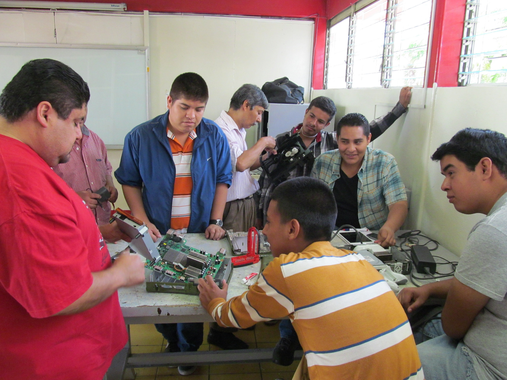

Nuestras Especialidades y Cursos

"Mantenimiento a Equipos y Sistemas Electrónicos".
- Mantenimiento preventivo y verificación de tarjetas electrónicas analógicas y digitales.
- Mantenimiento y reparación de pantallas.
- Mantenimiento y reparación de equipos de audiofrecuencia.
- Mantenimiento y reparación de hornos de microondas.
Perfil del Egresado
*Conocer los conceptos y funciones de las propiedades, características, equipo,
herramientas, suministros, dispositivos, diagramas, mantenimiento preventivo y correctivo de circuitos análogos
y digitales, así como de todo tipo de equipos electrónicos de audiofrecuencia, televisores y equipos de video,
aplicando las normas de higiene y seguridad en el desempeño de sus funciones con calidad.